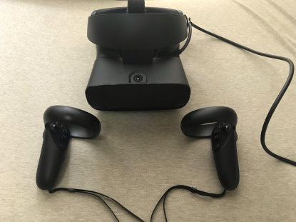
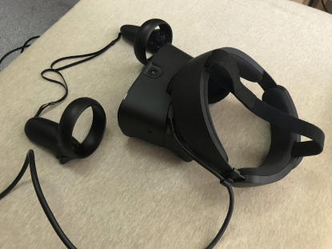

◆VR ヘッドセットを購入、到着しました

チュートリアルを体験
この先動画あり。音量+画面揺れ注意
https://www.youtube.com/watch?v=T3o7piJtaQs
https://youtu.be/qIYRvus_a1U
チュートリアルの時点でワクワクがすごい。現実には何も置いてない空間で机があるし、モノを持てる。そこにないものがある。
楽しすぎる。
ヘッドセットは結構大きい印象をうけるが思ったよりも重くなかった。
驚いたのが、イヤホンやヘッドホンのように耳を塞がなくても音がしっかり聞き取れる。
音響に詳しくはないが、綺麗に聞き取れると思う。
プレイ環境は横：約200cm 奥行：約170cmくらい。
◆VRアプリ開発
VR機器を用いての動作テスト
無事成功。この段階でできているのは
◆床・背景の設置
◆オブジェクトの生成・自作
◆オブジェクトの配置
◆キャラクターの配置
◆キャラクターをランダムに歩かせるスクリプト(プログラムファイル)の作成
UI実装(のさわり)
ランダム歩行の後、キャラクターをゾンビのように近寄ってくるようにしよう、
目線で敵を倒せるようにしよう、といった内容が続いたので一足飛びでUIの実装に挑戦。
ヘッドセットの視界に固定するUI「バイザーヘッドディスプレイ（HUD）」を作成
ただ、このHUDはVRでの没入感を減らしてしまうようで、使い方を考えなければならないそう。
UIがゲームプレイの一部となるようにするか、ハードウェアやシステムのメニューを開いて意図的に没入状態から
離れる時に使用するそう。
次の実装内容に飛ばした部分が絡んでくるため、現在はその内容のスクリプトを作成中
◆バーチャルマーケット3について
落選しました…。
今回定員600サークルのところ1014サークルの応募があり、これは前回の参加サークル429を大きく超えている。
参加サークルには何年もモデリングをやってきた人もいるが、ここ一年でモデリングを始めた人も多数参加している。
幸いなことに委託展示を受け入れてくれる方がいて下さり、モデルの展示はできることになりました。